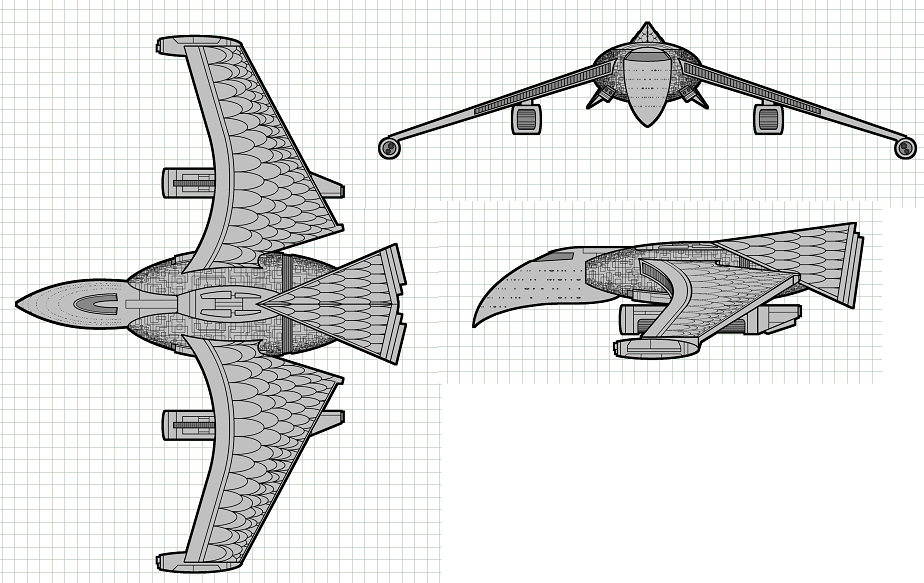

V-33 Thunderbird-class Heavy Cruiser (RSE)

Battle Stats
Engines and Superstructure
Total Power Units - 68 (Warp Engines - 2x24, Impulse Engines - 20)
MPR - 4/1
Superstructure - 35
Maximum Warp - 2
Industry Points to Build - 9
Beam Weapons (Disruptors)
Max Power - 9
Firing Chart - V
Arcs - 2F/P, 2F/S, 2A
Bonuses - +3(1-10) +2(11-16) +1(17-21)
Missile Weapons (Plasma Torpedoes)
Power to Arm - 1
Damage - 10
Firing Chart - Q
Arcs - 4F, 1A/P, 1A/S
Deflector Shields
Max Shield Power - 16
SPR - 1/3